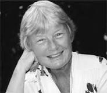

|
|
626榮耀大日 |
|
1 Glorious the day when Christ was born [Refrain:] 2 Glorious the day when Christ arose, 3 Glorious the days of gospel grace 4 Glorious the day when Christ fulfills
|
|
|
|
|
|
|
|


Glorious the Day When Christ Was Born · Modus · Karilla · Traditional https://youtu.be/UL5cjBSSxnU
| Text: | Glorious the day when Christ was born |
| Author: | F. Pratt Green, b. 1903 |
| Tune: | FROHLOCKT MIT FREUD' |
| Composer: | Heinrich Schütz, 1585-1672 |
| Short Name: | Fred Pratt Green |
| Full Name: | Green, Fred Pratt, 1903-2000 |
| Birth Year: | 1903 |
| Death Year: | 2000 |

The name of the Rev. F. Pratt Green is one of the best-known of the contemporary school of hymnwriters in the British Isles. His name and writings appear in practically every new hymnal and "hymn supplement" wherever English is spoken and sung. And now they are appearing in American hymnals, poetry magazines, and anthologies.
Mr. Green was born in Liverpool, England, in 1903. Ordained in the British Methodist ministry, he has been pastor and district superintendent in Brighton and York, and now served in Norwich. There he continued to write new hymns "that fill the gap between the hymns of the first part of this century and the 'far-out' compositions that have crowded into some churches in the last decade or more."
--Seven New Hymns of Hope , 1971. Used by permission.
Tune - Diemer
| Short Name: | Emma Lou Diemer |
| Full Name: | Diemer, Emma Lou, 1927- |
| Birth Year: | 1927 |

‘Glorious the day when Christ was born’HYMNS
“Liturgically, this wonderful hymn is especially fitting for Epiphany,
Ascension, and Christ the King, as well as the Easter season (of course), and
makes a wonderful processional hymn or a gathering-for-worship song,” says The
Rev’d Canon Dr David Cole
The Rev'd Canon Dr David Cole
Monday
12 July 2021
https://anglicanfocus.org.au/?p=20552
Print article
At first glimpse ‘Glorious the day when Christ was born’ looks more like it was
written more for Christmas than Easter. However, while this song is relevant for
Sunday services generally, as you cast your eyes past the first line and over
the full text, it becomes clear why it has a special place at Easter. In just
four verses (with lots of ‘Alleluias!’) the late distinguished poet, pastor,
playwright and hymn text author, The Rev’d Fred Pratt Green CBE, takes us on a
theological journey which charts the course of Christ’s redeeming work, while at
the same time encouraging and challenging us all on our faith journey.
This particular text is immediately accessible to us because we can sing it to a
well-known Easter tune, Lasst uns Erfreuen, which you might recognise as the
great 7th century Easter hymn, ‘Light’s reddening dawn gleams through the sky’.
Fred Pratt Green’s text has been published in many congregational song
collections around the world, and has been included as no. 826 in Songs of
Grace, supplement to Together in Song (Aust Hymn Book II)*.
The first verse points us to Christ, “whose life and death that love reveal
which mortals need and need to feel”. We are reminded that this great
theological truth of God’s love for us in Christ is not just academic, but one
which we “feel” and recognise in our inner selves.
Verse 2 begins with, “Glorious the day when Christ arose, the surest friend of
all his foes”. Christ’s example is one of loving those who actively opposed him,
including those responsible for his death on a cross. Fred Pratt Green implies
the question as to how we as Christians respond to the challenge to befriend
rather than criticise those with different religious views and fight those who
would oppose us and our Christian beliefs.
In the third verse, we sing “Glorious the days of gospel grace when Christ
restores the fallen race,” to which we all may respond from the bottom of our
hearts, with a resounding Easter “Alleluia!” And finally Green points us in
verse 4 to the fulfilment of all things in Christ, “when that strong Light puts
out the sun and all is ended, all begun”.
This wonderful song encapsulates the story of the purpose of Christ’s life,
death and resurrection through exceptional theological poetry, taking up themes
of Acts 1.9-11, Romans 6.15-19, and Ephesians 1 (useful knowledge for the
service planners among us). The comprehensive indexes in Songs of Grace indicate
that this song works well also in other great thematic schemes: adoration and
praise, the glory of God, Jesus’ earthly life, Christ’s kingship, and the
sovereignty and majesty of God. Liturgically, this wonderful hymn is especially
fitting for Epiphany, Ascension, and Christ the King, as well as the Easter
season (of course), and makes a wonderful processional hymn or a
gathering-for-worship song.
We can be thankful that, after a long and varied ordained ministry, Fred Pratt
Green turned seriously to the ministry of hymn texts on the eve of his
retirement. In the Companion to Together in Song (AHB, Sydney, 2006), Wesley
Milgate and D’Arcy Wood tell us that Fred’s co-option to the committee preparing
Hymns and Songs in 1969 was the catalyst:
“He was encouraged to write words for tunes which the committee wished to
include, to fill gaps on such themes as the world mission of the church,
Christian unity and social responsibility…Few [recent] hymnals in English have
failed to include hymns by F. Pratt Green. His ‘Hymn for the Nation’ was the
only modern hymn sung at the Silver Jubilee service for Queen Elizabeth II in
1977’ (p.631).”
It is little wonder, then, that Fred Pratt Green was awarded an honorary
doctorate from Emory University (USA), served as Vice President of the Hymn
Society of Great Britain and Ireland, was an Associate of the Royal School of
Church Music and was made a Fellow of the Hymn Society of the USA and Canada.
‘Glorious the day when Christ was born’ is an important item in Songs of Grace,
and will make a wonderful addition to your repertoire of congregational songs if
you don’t already know it. It will enhance your services, especially at Easter,
in a new and refreshing way.
* Songs of Grace: Supplement to Together in Song, Australian Hymn Book II is
published by Australian Church Resources and is available on the Australian
Church Resources website in a paperback book and CD.
https://anglicanfocus.org.au/2021/07/12/glorious-the-day-when-christ-was-born/
Emma Lou Diemer 1927-
|
|
|
Emma Lou Diemer
|
|
|---|---|
| Born |
November 24, 1927 Kansas City, Missouri, United States |
| Genres | |
| Occupation(s) |
|
| Website |
www |
Emma Lou Diemer (born November 24, 1927[1] in Kansas City, Missouri[2]) is an American composer.
Diemer has written many works for orchestra, chamber ensemble, keyboard, voice, chorus, and electronic media. Diemer is a keyboard performer and over the years has given concerts of her own organ works at Washington National Cathedral, The Cathedral of Our Lady of the Angels in Los Angeles, Grace Cathedral and St. Mary's Cathedral in San Francisco, and others.
Works include many collections and single pieces for organ as well as many for solo piano, piano 4 hands, and two pianos. Her major chamber works include a piano quartet, string quartet, two piano trios, and sonatas and suites for flute, violin, cello, and piano as well as settings of the psalms for organ with other instruments. Diemer has written many choral works as well. She has written numerous hymns, several of which appear in church hymnals. Her songs number in the dozens, using texts by many contemporary and early poets including Walt Whitman, Amy Lowell, Sara Teasdale, Alice Meynell, Thomas Campion, Shakespeare, John Donne, her sister Dorothy Diemer Hendry, Emily Dickinson, Robert Lowell, and many others.
Diemer's compositional style over the years has varied from tonal to atonal, from traditional to experimental. She has written works for non-professional and professional performers, originally under the "Gebrauchsmusik" philosophy, but has produced many works, particularly for keyboard, that are difficult and challenging. The latter category includes her "Fantasy" for piano; Seven Etudes for piano; Homage to Cowell, Cage, Crumb, and Czerny for two pianos; Variations for Piano Four Hands (Homage to Ravel, Schoenberg, and May Aufderheide); Four Biblical Settings for organ, Concerto for Organ ("Alaska"); and many psalm setting collections. The totally serial "Declarations" for organ (1973) contrasts to the more tonal 2013 concerto for violin and orchestra "Summer Day". Her work in the electronic field during her years on the faculty of the University of California influenced a number of works including her Toccata for piano that has a number of performances on YouTube.
Academics[edit]
Diemer received both her B.M. and her M.M from the Yale School of Music in 1949 and 1950, respectively. She then went on to study composition in Brussels, Belgium on a Fulbright Scholarship from 1952 to 1953, ultimately returning to the United States to receive her Ph.D from the Eastman School of Music in 1960.[3] She was professor of theory and composition at the University of Maryland 1965-70, and joined the faculty of the University of California (UCSB) in 1971. She is professor emeritus, 1991–present.
While at UCSB, Diemer helped to establish the computer/electronic music program.
Notable works[edit]
She was composer-in-residence with the Santa Barbara Symphony 1990-92. The symphony premiered 4 of her works:
- Concerto in One Movement for Piano (which received a Kennedy Center Friedheim award in 1992), recorded in Volume X of the MMC New Century series of CDs (MMC 2067, released in 1998), performed by Betty Oberacker, soloist, and the Czech RSO led by Vladimir Valek. One of its features is that it sporadically employs dampened piano strings.
- Santa Barbara Overture
- Homage to Tchaikovsky
- Chumash Indian Dance Celebration
Other notable works:[4]
- Songs for the Earth, commissioned by the San Francisco Choral Society, performed in Davies Hall, 2005. The work is for chorus and orchestra, with texts by Emily Dickinson, Mary Oliver, Dorothy Diemer Hendry, Omar Khayyam, and Hildegard von Bingen
- Fragments from the Mass for chorus, 2 pianos, percussion.
- Concerto in One Movement for Marimba (1991), commissioned by the Women's Philharmonic of San Francisco.
- Fantasy for Carillon (2009), commissioned by Margo Halsted. It premiered in September 2009, at the 40th anniversary of the Storke Carillon at the University of California, Santa Barbara.[5]
Two important collaborations, among many, with fellow musicians were with Joan Devee Dixon, organist, who commissioned over 50 works for organ and various instruments and instrumental ensembles from Diemer during the 1990s and early 2000, and Philip Ficsor, violinist, who commissioned several violin and piano compositions from Diemer and recorded her complete works for violin and piano and including the concerto for violin (2013).
Awards[edit]
- Eastman School of Music
- Yale School of Music
- National Endowment for the Arts
- ASCAP (annually since 1962)
- American Guild of Organists (1995 Composer of the Year)
- Mu Phi Epsilon
- honorary doctorate in 1999 from the University of Central Missouri
Family[edit]
Diemer's parents were George Willis Diemer (1885-1956),[6] American educator, college president, one of a group of American educators who were sent by the U.S. Dept. of State to reorganize the educational system of Japan after World War II; and Myrtle Diemer née Casebolt (1889-1961),[6] church worker and homemaker. Diemer's siblings were poet/teacher Dorothy Diemer Hendry (1918-2006);[6] George Willis Diemer II (1920-1944),[6] Marine fighter pilot, musician/teacher; John Irving Diemer (1920-1964),[6] school principal/musician in Overland Park, KS.
References[edit]
- ^ Emma Lou Diemer, composer November 24 in History
- ^ Emma Lou Diemer
- ^ Emma Lou Diemer – Gemini Press
- ^ "Emma Lou Diemer". www.emmaloudiemermusic.com.
- ^ "Fantasy for Carillon [DFC] - $17.00 : American Carillon Music Editions!, Carillon Sheet Music". americancarillonmusiceditions.com. Retrieved 2019-04-02.
- ^ a b c d e Hendry, Dorothy Diemer. Looking for Jecny: The life of Lizzie Elnora Murphy Casebolt. p. 469.
https://en.wikipedia.org/wiki/Emma_Lou_Diemer